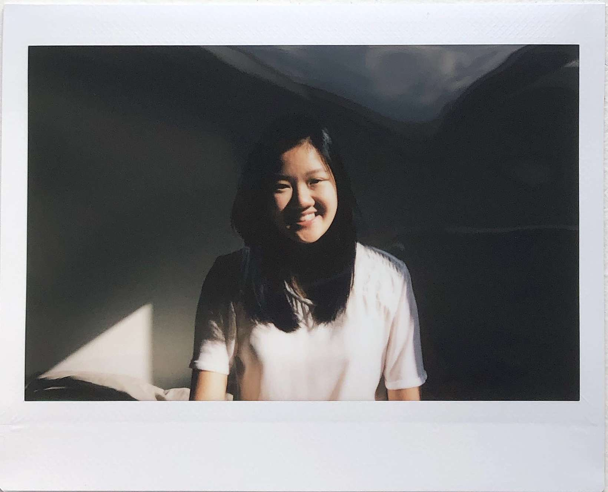
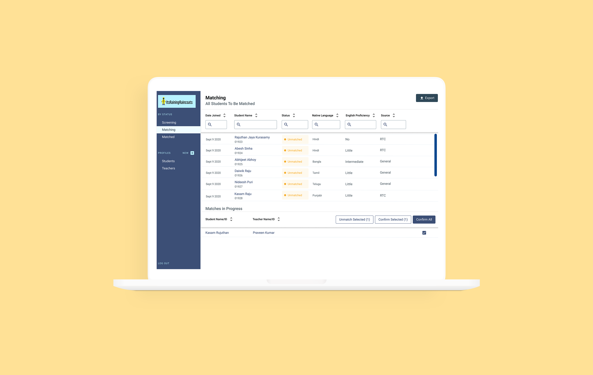
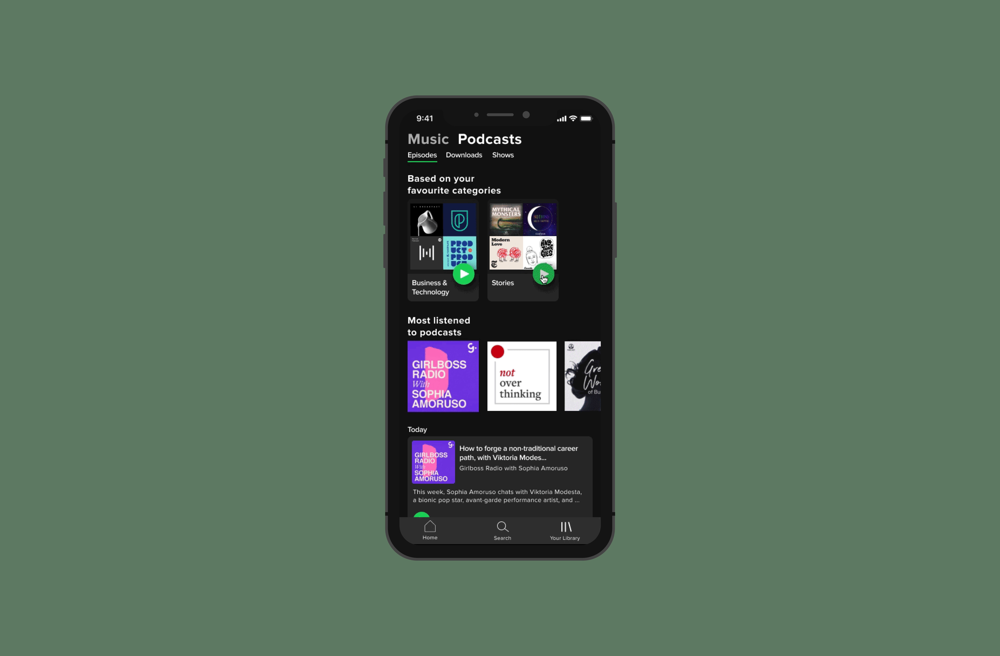
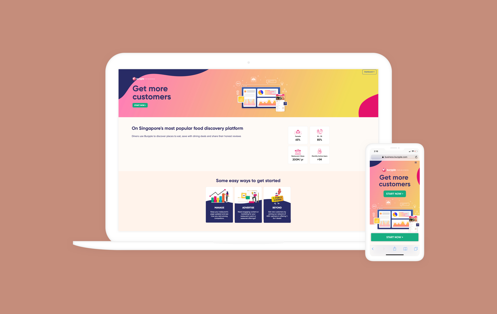
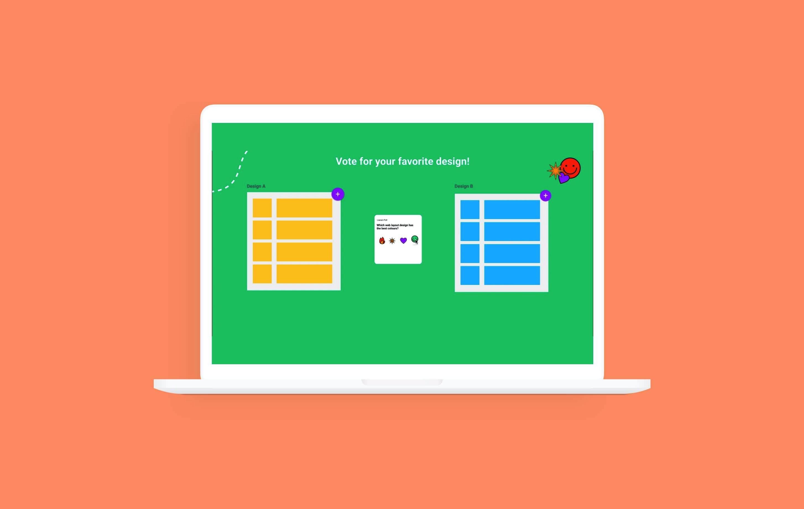

Hey there! Nice to see ya 👋🏼
I’m Jay Li Quek, a product designer. I love untangling problems, scaling through design systems, and building communities.
Have a nice scroll.


Building an internal matching system
Helped a non-profit make better matches between migrant workers during COVID-19

Discover Podcasts with Spotify
Improving podcast discovery

Burpple for Businesses
A re-vamped landing page for Burpple (Singapore’s food discovery platform for Singaporeans to contribute and discover reviews) to present the three services offered to food and beverage vendors in Singapore and Malaysia.

Making voting fun in Figma
Finding a joyful way for product teams to vote
About
I believe that we are able to create better relationships with our devices when there is more transparency about how our data is being utilized by companies. With heightened knowledge about the attention economy, I am all for finding mediated ways to utilize technology to our advantage.
These topics have influenced the classes I have taken as a computer science and media, culture, and communications major at New York University. Additionally, I have been able to incorporate this lens at my previous product design internships at Burpple and Centered.
Outside of work and school I love listening to podcasts about entrepreneurship, learning french and shooting film. I am situated in New York, but have lived in urban cities my whole life (Chicago, Singapore and Hong Kong).